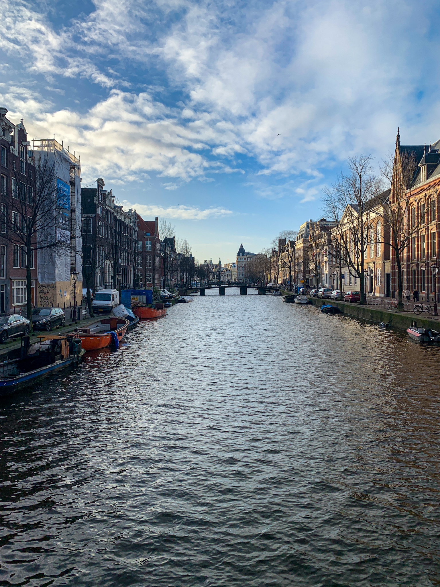

Finding The Best Shops on The Streets of Amsterdam

To really get to know Amsterdam through the eyes of a local one must simply wander the vast streets and canals. Meandering through the vast city, you can really appreciate the simple beauty of the old city. The old dutch style and classic Amsterdam charm is what makes it such an enjoyable place to walk around.